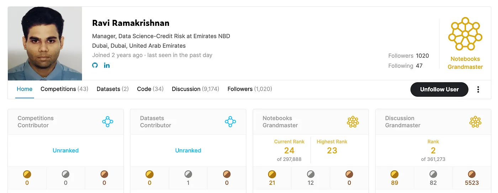

by Anshuman Mishra & Abheesht Sharma
The AI world is brimming with talent. Folks in the AI industry and the research world are continuously pushing the boundaries of innovation. With this interview series, we want to focus on bringing these inspiring (and possibly unheard of) stories out into the world — their struggles, their triumphs and their journey. We will be conversing with people we have looked up to, and still look up to for their unparalleled contributions to the AI world. We call this interview series AI Chronicles.
Kaggle Profile of 2xGrandmaster Ravi Ramakrishnan Today, we are honored to have Ravi Ramakrishnan with us. Ravi is a Data Science Manager-Credit Risk at Emirates NBD. Prior to Emirates NBD, he used to work at the Commercial Bank of Dubai as a Data Scientist, and has 8+ years of experience in the industry. He holds a Bachelor’s degree in Electronics, and completed his MBA in Finance from NMIMS. Ravi contributes extensively on Kaggle, and is a Notebooks Grandmaster (ranked #23) and a Discussions Grandmaster (ranked #2) on Kaggle.
Anshuman & Abheesht : Namaste, Grandmaster! Thank you for taking the time to do this.
Ravi: Hello, Anshuman and Abheesht. Thanks for inviting me to do this. Saadar pranaam!
Anshuman: You’ve done your Bachelor’s in Electrical Engineering, post which you did an MBA. What brought you to data science and ML? Please tell the reader about your Machine Learning journey!
Ravi: Absolutely, I’d be happy to share my journey. While my academic background is in electrical engineering (BE) and I later pursued an MBA, my entry into the world of data science was somewhat serendipitous. Back in 2015, during a visit to Dubai for my CFA Level 3 exam, I had the opportunity to attend interviews with my previous employer, who was in the process of establishing a central analytics structure known as BICC. To my surprise, I was selected for the role of a data scientist, even though my previous focus had been on finance and investment banking. I decided to take up the challenge, giving myself a year to assess my career path. My initial days in this role were demanding as I had to bridge the gap in my knowledge of data science tools like SQL, SAS, MATLAB, SPSS, EDW, and CRM development. However, with dedication, guidance from colleagues, and consistent learning, I quickly overcome these challenges.
Over the years, I became deeply involved in model development across various domains, including customer segmentation, CRM lead management, IFRS9 PD-LGD model development, ECL calculation engine development, and campaign management. This journey of hands-on experience and continuous learning led me to discover my passion for data science.
When I look back, I believe that my career in data science found me rather than the other way around. It’s been a rewarding journey of almost a decade, and I’m excited about what the future holds. I hope my experience can inspire others to explore and embrace this dynamic field of data science and machine learning.
Anshuman: Given your serendipitous journey into data science and your passion for continuous learning, I’m curious to know: what specifically inspired you to pick up Kaggle and dive into the world of machine learning competitions?
Ravi: My yester manager introduced me to Kaggle in 2020 during the lockdown. I was busy with some certifications in fitness then and promised him to have a look at it after passing those exams. I eventually joined Kaggle in September 2021 after completing my Orthopedics specialization. I thank him for introducing me to Kaggle as I feel I would have missed out on a very important component of my learning journey had I not joined Kaggle. I perused the tiers on this platform slowly and steadily and established a learning and development plan for myself akin to a fitness plan. I usually advise my patrons to follow a macro-meso-micro fitness periodization cycle with planned gains and achievements all along the journey. I followed my fitness regimen in Kaggle, focussing on small but consistent efforts on a daily basis. I set realistic goals for myself and consistently achieved them, else reset the goals apropos to contemporary situations, keeping a balance between Kaggle, fitness, running and office commitments.
Abheesht: What was your motivation behind starting with the discussions track as opposed to say, the competitions track on Kaggle?
Ravi: My motivation to excel in the discussions track on Kaggle, ultimately achieving the status of Grandmaster, was driven by several factors. Firstly, discussions on Kaggle offer a unique platform for knowledge exchange and collaboration with fellow machine learning enthusiasts. I was drawn to the open and creative environment that discussions provided, offering an opportunity to engage meaningfully with the community. Additionally, active participation in discussions allowed me to continuously learn and stay updated with the latest trends and techniques in the field. It was a way for me to both contribute to the community and absorb insights from others, contributing to my own growth as a data scientist.
Finally, achieving Grandmaster status in discussions represented a significant milestone in my Kaggle journey, reflecting my commitment to mastering various aspects of Kaggle. It served as a testament to my dedication to sharing knowledge, fostering collaboration, and contributing to the thriving Kaggle community.
Abheesht: Given your demanding role as a Data Science manager, how do you effectively allocate time to maintain an active presence on Kaggle? This is something I struggle a bit with — managing time between work, and open source.
Ravi: Managing my role as a Data Science manager at Emirates Bank while maintaining an active presence on Kaggle requires effective time management and discipline. I’ve structured my daily routine to strike a balance between work and Kaggle activities.
My day is divided into distinct parts: 1. Morning (6 am — 8 am): Dedicated to exercise, ensuring physical well-being. 2. 8:30 am — 6 pm: Focused on my responsibilities at the bank. 3. 6 pm — 9:30 pm: Allocated for Kaggle activities, where I participate in discussions, competitions, and kernels. 4. 9:30 pm — 10:00 pm: Reserved for meditation and mindfulness activities to maintain mental clarity.
This disciplined approach allows me to optimize my time efficiently. I also prioritize health through mindfulness practices, exercise, and a balanced diet, which helps maintain physical and mental well-being. By adhering to this routine, I can effectively manage my demanding work and Kaggle commitments.
Anshuman: People participating in the discussion track on Kaggle are very opinionated, and most competition grandmasters, from time to time, appeal to remove it from a ranking tier. What is your opinion on this?
Ravi: I respect their opinions but wish to mention that the discussion track is akin to a glue that binds the community together. Everyone can’t be a competition participant but quite a few wish to learn as well. The discussion track posits some valuable information regarding general ML practices, MLOps, coding elements, competition solutions, resources, career advice, progression appreciation and key industry updates and provides valuable information for one and all, especially beginners to onboard, learn and develop appropriately. I wish to opine that we have 300+ competition GMs as on date and 66–67 discussion GMs too. It is far more difficult to progress in this tier than people’s general fads. One needs to be good at communication and present one’s content well to secure any form of progress in this tier.
Anshuman: Could you please share a few occasions when you made valuable connections or benefitted in great deal from it?
Ravi: I have learnt a lot from elite Kaggle users throughout my tryst with Kaggle. Users like AmbrosM, Marialla Pratta, Dr. Chris Deotte, Laurent Purchout, Dr. Carl McBridde Ellis, Sanyam Bhutani, Parul Pandey, SRK, Rohan Rao, etc. will always be my inspiration on Kaggle and even otherwise. I have learnt a lot from their Kaggle and other work and will consider them my mentors always. I wish to thank you as well for connecting with me and providing me a chance to elicit my thoughts on this topic.
Abheesht: You are very fond of Kaggle’s playground series. Why do you prefer it over other competitions on Kaggle?
Ravi: I like to participate in the playground series due to the below reasons-
This series offers room to experiment with feature engineering and models to a great extent. Datasets are simpler than featured competitions and hardware requirements are tepid. One could ace these competitions using the freely available resources on Kaggle and Colab without any undue advantage based on hardware. I opine that the select few participants in other featured competitions category using professional login Ids and having access to premium resources do carry a sizable advantage over the rest, rendering these competitions a no-so-level-playing-field. This issue is circumvented in this series almost entirely. I like ML model development on tabular data and these competitions offer me opportunities exactly matching my interests. These competitions are well spaced through the year with a 2–3 week cycle. This offers time to develop models within a limited time frame and move onto subsequent challenges swiftly. I somehow fail to align with a longer duration of 3 months elsewhere without any major reward for 90% participants elsewhere on the platform. I admire the extent of insightful discussions and kernels shared in the forums as we don’t have any predisposed inhibitions arising from medal attributions herewith. I have learnt a lot from these forums and contribute to my best extent too, keeping a few tricks private. Most of the playground competitions have 1000+ participants making them liquid from a LB perspective. I have performed well in quite a few episodes and am receiving consistent results nowadays, making my participation more lucrative. Anshuman: Do you feel the Kaggle competitions are related to your work?
Ravi: I do not think that this series is particularly linked to my work tasks but opine that it mirrors my interest areas greatly. I can manage my daily routine perfectly with this series as one may spend a couple of hours daily to secure a good score in these competitions. This enables me to invest time in other activities keeping my Kaggle participation to a best feasible optimum.
Anshuman: What kind of challenges do you look for today? How do you decide if the competition is worth your time?
Ravi: I wish to expand my horizons in featured competitions in the medium run of the next 1–2 years. In choosing Kaggle challenges today, my focus has evolved over time. I’m increasingly interested in featured competitions as I aspire to expand my horizons in this area over the next 1–2 years. Additionally, I aim to maintain a balance by contributing to the Kaggle playground series, which aligns well with my interests.
When deciding if a competition is worth my time, I consider several factors:
Data Size: I assess the data size; smaller datasets can be appealing as they allow for quicker code completion and often align with simpler models. However, I consider the complexity of handling small datasets with numerous columns. CV Score Stability: I examine the standard deviation of the CV (cross-validation) score to gauge model stability across iterations and folds. Consistent CV scores are typically more appealing. CV-PLB Relations: I look for competitions where there’s a meaningful relationship between CV scores and the public leaderboard (PLB). This helps in making informed final submissions. Time Availability: Personal and professional commitments play a significant role. I avoid challenges where I may not be able to devote sufficient time toward the end, instead opting for competitions that align better with my schedule. Balancing these considerations helps me make informed choices about which competitions to participate in, ensuring that my time is well-invested and aligned with my goals.
Abheesht: For noobs like me who haven’t dabbled much in Kaggle competitions and discussions, what would be your best advice?
Ravi: I may suggest a few points based on my experience on the platform-
Keep learning as cynosure of all your activities on Kaggle and otherwise. This is a much more satisfying experience than aiming for medals. Till date, I never aimed to become a GM but aimed to become a better ML enthusiast. Stay consistent in any life and personal endeavor. This stems from 2 elements- interest in the activity and realistic goal setting. I believe in SMART goal planning and periodization and have implemented it across all walks of life. This is an open secret to my success on Kaggle and in other walks of life too. Leann to be modestly assertive. Saying a no without being rude is a very important skill that requires some training and experience. This will help one and all at work I have deep respect for time. I value my time a lot and respect it a lot. I try and be punctual and leave on time. I don’t believe in late work practices and to this day, have mostly avoided this to good effect and lots of professional success too. Develop a life-work balance — this becomes important as one ages, as one delves into multiple commitments too. One needs to balance multiple life events in parallel and one’s planning and execution skills are put to a rigorous test. Balancing various life and routine events is key to success in multiple facets of one’s personality Take structured breaks from one activity at a time rather than a complete break from all ongoing activities. I usually take structured breaks from the office (only) followed by a break from my fitness practice and then a break from Kaggle amortized over a span of 6–8 weeks. This keeps me motivated for a longer period of time, enabling me to render a fine balance across multiple events of almost equal priority Try and automate as much code as possible- this is specifically useful for competitions and repetitive tasks like curating baseline models, feature processing, preprocessing and general training. One may then edit the general pipeline to add assignment specifics. This is likely to save time and enable greater productivity Team up well and plan your strategy. Teaming up with friends helps a lot across all 4 tiers. Collective endeavor elicits significant synergy based power. Avoid dubious practices that could harm your reputation. This may hinder your progress a lot. Use Kaggle free resources to good effect. 50 GPU + TPU hours is significant and is available at your disposal per week. Post content consistently on Kaggle and share ideas, Inhibition is the enemy of collaboration and collaboration is a good route to success. Try and learn new skills/ improve existing skills periodically. Also try and match your current learning patterns with your long run learning goals periodically. If you digress from your long run goals, you may be better with either rebalancing the long run goal/ current activity. Develop an all-round profile outside of Kaggle too. ML is an ocean of opportunities and Kaggle is one of the ways to attain success. Stay active elsewhere as well, including but not limited to Analytics vidya, YouTube, GitHub, medium.com and any other community you find suitable. Hugging Face competitions are also good to learn and grow in this regard. I encourage one and all to participate in hackathons and any local competitions and conclaves that offer networking opportunities too. Remember that networking is as important as learning as the industry relies a lot on this aspect for referrals and job opportunities. Enjoy the journey and derive value from every step of your journey. I suggest one could break down a long run problem into a series of structured and achievable micro-goals that could eventually lead him/ her to success. I usually do this to good effect (with some meticulous planning and experience) and encourage others to follow suit. Keep others updated with your successes. LinkedIn is a good place to post about your professional successes including Kaggle progression, ranks and competition approaches too. Abheesht: When you are given a problem statement, how do you devise AI solutions for it? Do you mostly use classical ML models, since most of the data you use is tabular? What do you look for in a proposed solution?
I predominantly work in credit risk areas that do not involve AI models to any extent. I think this is a huge drawback of this career path as Financial Regulators refrain from accepting results from AI models and latest advancements in this field of knowledge. Most of our models are classical ML models with emphasis on tabular data and simple algorithms.
I usually devise my work assignment into the below steps for convenience and project planning-
I understand the end-user’s requirement and the assignment’s long run usage before starting work on the project. Usually I am involved in assignments that necessitate continual usage and a user-friendly and clean data and model production pipeline. I break down the assignment into several micro-goals spanning over a 1–2 week period. I plan these goals with emphasis on data wrangling as a primary task spanning over 80% of the overall time invested. I usually automate the data pipeline efficiently, working towards a production and deployment all through the development process. This eases the production and deployment process substantially and improves stakeholder satisfaction. I usually conduct a catch-up meeting with the team and the end user at the end of every micro-goal. Most of our projects and assignments are internally and externally validated. I ensure that all our data processes are completely reproducible and are validated before we commence with the model development. Hence, I engage the internal validation team early in the project, facilitating timely comments and concerns addressing them immediately. Once we zero in on the development data, we conduct a bigger meeting with senior management, explaining the key data challenges and assumptions in the data pipeline. We also demonstrate the feature shortlisting processes (we have built several internal automated tools for the same) and revert to feedback from key stakeholders. This enables us to build models freely thereafter without any adverse comments later in the project lifecycle. We document the minutes of this meeting and circulate to Steering committees and auditors to ensure a 4-eye check on the progress and results. We then build a simple baseline model and showcase the selected variables to the key end-users, accepting their feedback and working on the same. Finally, we tune our models, ensemble results (if needed) and prepare the final model and submit it to the business team for review. As a standard practice, I build 10–15 candidate options and deploy them simultaneously to elicit an end-state result. This may perhaps posit a provision forecast/ NPA value/ default rate prediction/ PPNR per model selected. Business teams are highly comfortable discussing the model along with the result in this manner rather than a percentage result usually generated from the model. We then engage the internal and external validators and ensure our project is well documented. This is highly important in my area of work as Regulators usually peruse our model documents in detail. As a final step, we engage the IT and deployment teams to deploy the model in production integrating the model results into a report and entering controls as deemed necessary. This is a lengthy process and has to be facilitated with several UAT rounds and stake-holder approvals. This usually spans across a couple of quarters after the model is internally validated. As a final step, we are also supposed to document the IT implementation reports in a prescribed format and send them to the Regulator upon instructions. The model governance process along with these documents and code are thoroughly scrutinized regularly by the Regulator as part of their regular audits and reviews. Considering the sensitivity of the results involved, we usually select a simple model with explainable features as our chosen model for an assignment. We are particularly careful about production specific costs and time involvement to deploy the model and usually do not choose variables that otherwise perform well in the training period but are difficult to curate in production. We usually consult domain experts (economic research teams, credit underwriters and credit policy experts) to ratify and opine on the model development process and consider their subjective inputs as part of model governance.
Abheesht: For the initial years of your career, you must have been an Individual Contributor (IC), before you transitioned to a managerial role. What are the major changes one has to make, to succeed in a managerial role? Which role do you like more?
My role in my team is a combination of an individual contributor and a manager. As a manager, I have the freedom to design my project plan to good effect based on the overall resources available in the team and the budgets involved. I usually resort to the below norm while working on several assignments-
I prefer to perform data wrangling individually if the project spans over a longer duration. I opine that this provides me more control on an important aspect of the project helping me to automate and design the pipeline to my strengths and weaknesses. I also engage the stakeholders to my schedule and am more comfortable engaging the validator in this process. Once the data is finalized, I hand it over to junior colleagues to build a model. This fosters a win-win for all colleagues involved and often results in a timely completion. In some cases, I individually complete the entire assignment on my own, including data and models too and hand over the results to others to deploy. Other projects often require collaboration. As an example, IFRS9 models for PD-LGD are long run assignments that span over a year. We usually split the project into 3–4 managers, with each manager responsible for a set of products/ business entities. Our bank is a large international conglomerate, hence we need to engage foreign teams too (this is an interesting challenge in itself). I usually collaborate with my team and foreign teams in such assignments and demarcate roles for each participant with strict timelines. We usually split the overall assignment into micro-cycles and plan them properly to ensure smooth and effective progress. I usually assign tasks to junior colleagues based on their strengths and weaknesses and often ensure a well documented peer review. This ensures correctness and smooth progress through the project. I usually liaise with external stakeholders and internal validators and often defend our assumptions in meetings. This requires some negotiation skills in my opinion. I leant this from my seniors in my 2 employers and feel that I am adept at this aspect of project management currently. My role in my previous employer was an individual contributor while my current role involves both aspects of project management. I opine that one needs to be highly diligent at time and resource management and set and plan goals efficiently as a manager/ lead. One’s technical skills are seldom tested while managing assignments, but one’s negotiation skills, ability to work under tight timelines and strict budgets, handling escalations are tested to a greater extent as a lead. I think soft skills are more important herewith and this is gained with experience and inputs from senior colleagues. I have a good network in the industry and I use this to good effect to learn and improve myself over time. I usually do not have a preference for a role type, but given the overall career progression paths in the industry, I may perhaps choose to progress as a lead / senior lead with collaborative skills and roles going ahead.
Best regards and happy learning!
That’s it. This was the very first interview of our new blog series AI Chronicles ! This series is a joint effort of Anshuman Mishra and Abheesht Sharma. Anshuman is currently working at Flip as a Machine Learning Engineer. Abheesht is an ML Research Scientist at Amazon, where he works on detecting advertisement bots. Both of them contribute extensively to ML open-source software and have been involved in developing KerasNLP.